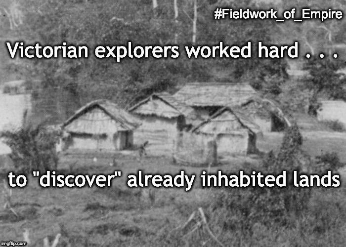
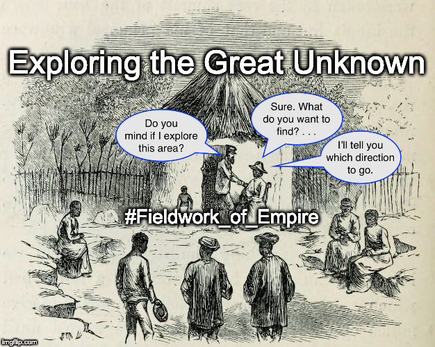
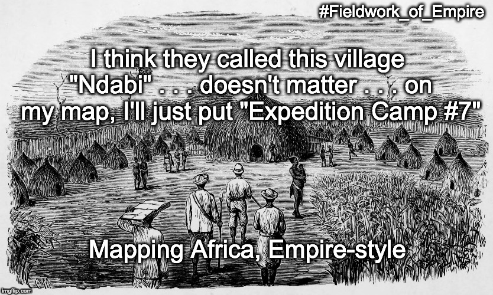
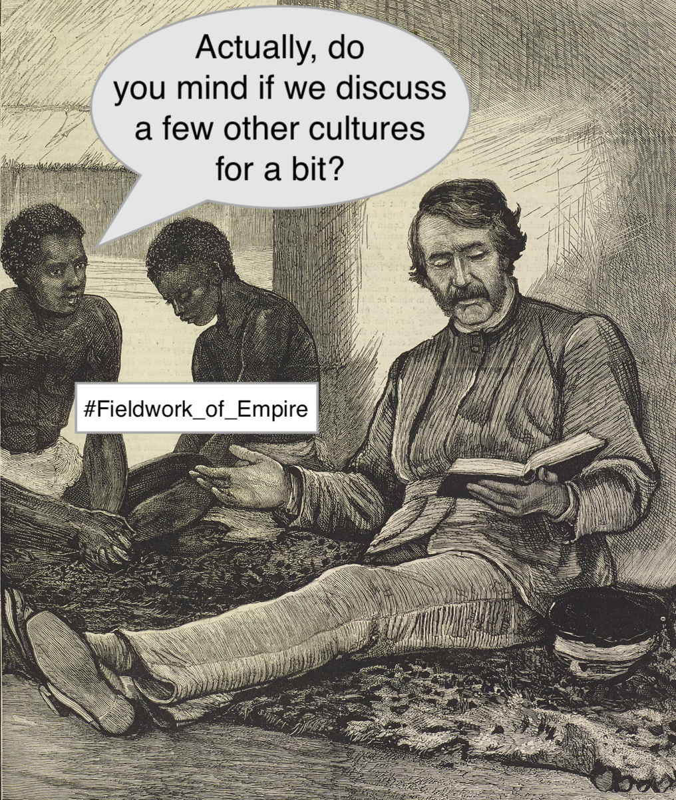
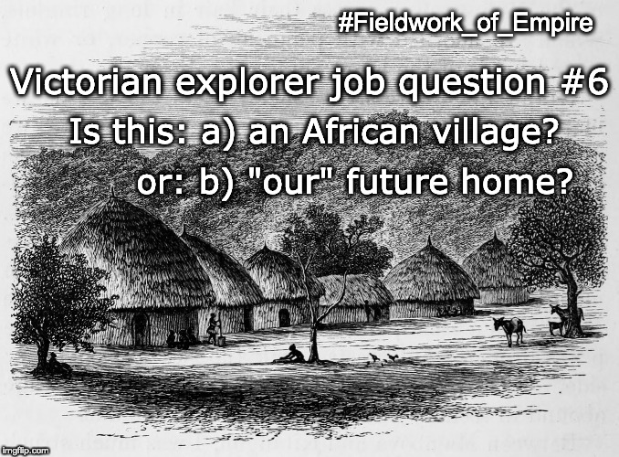
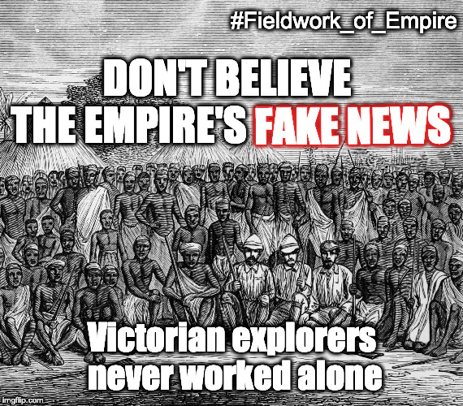

.")
The memes below play on various themes taken up by Fieldwork of Empire. In theory, the sequence consists of fifteen memes, but only eight are published here. Items missing from the sequence serve to alert viewers to gaps in the documentary record. Such gaps might be read as corresponding to the non-western voices that have been erased from the history of the British Empire in Africa.
#2 (see above): When we write our books . . . let's pretend it was just the two of us.

#3: Victorian explorers worked hard . . . to "discover" already inhabited lands.
. Meme text: “Is it 'blank'? Is it 'dark'? When Empire couldn't make up its mind.” Meme copyright Adrian S. Wisnicki. Creative Commons Attribution-NonCommercial 3.0 Unported (https://creativecommons.org/licenses/by-nc/3.0/).")
#5: Is it "blank"? Is it "dark"? When Empire couldn't make up its mind.

#8: Exploring the Great Unknown. "Do you mind if I explore this area?" "Sure. What do you want to find? . . . I'll tell you which direction to go."

#10: "I think they called this village 'Ndabi' . . . doesn't matter . . . on my map, I'll just put 'Expedition Camp #7.'"

#11: "Actually, do you mind if we discuss a few other cultures for a bit?"

#13: Victorian explorer job question #6. Is this: a) an African village or: b) "our" future home?

#15: Don't believe the Empire's fake news. Victorian explorers never worked alone.